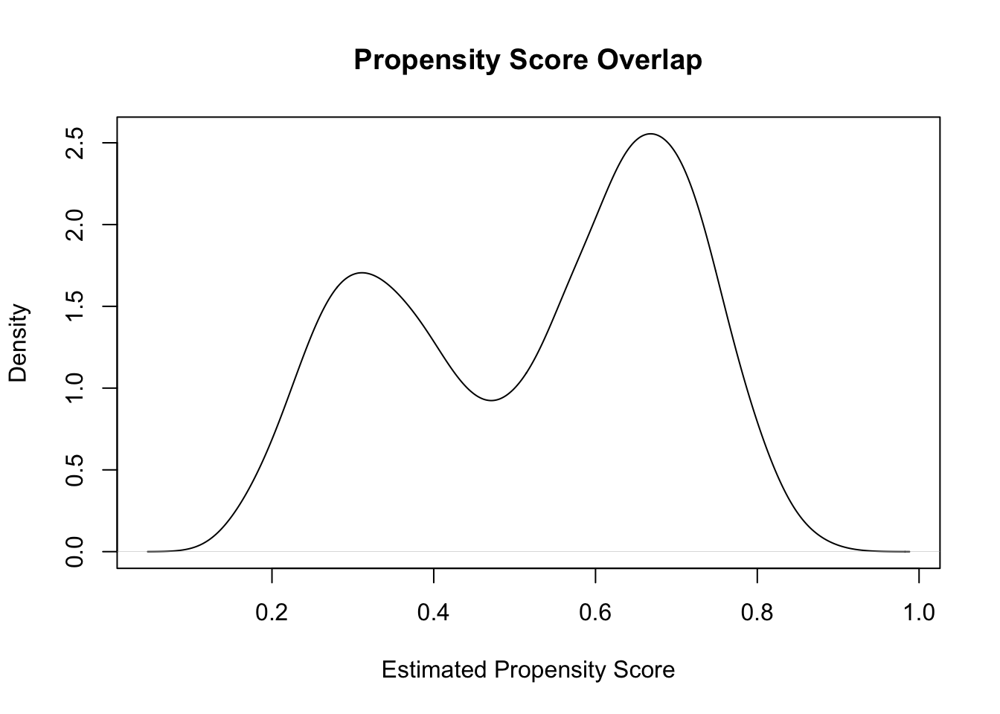

Chapter 1.3: From Causal Questions to Analysis — Identification, Estimands, and Statistical Models
In this chapter, we connect the causal estimand—the quantity that answers our scientific question—to a statistical estimand, which is something we can estimate from observed data. This is the crucial middle step of the Causal Roadmap: translating what we want to know into what we can learn from the dataset at hand.
We will walk carefully through: - Identification: when causal effects are estimable from data - Statistical estimands: mapping causal parameters to observable quantities - Positivity, consistency, and exchangeability in practice - Why regression coefficients are not causal effects - How to compute identified estimands using real R code
1. What Does It Mean to Identify a Causal Effect?
A causal estimand (e.g., ATE = E[Y(1) – Y(0)]) is defined in terms of potential outcomes, which we cannot fully observe. Identification means:
Can we express the causal estimand entirely in terms of the observed data distribution?
If yes → causal effect is identified
If no → causal effect is not identifiable without additional untestable assumptions or new data
The three key assumptions required for identification are:
1. Consistency
The observed outcome equals the counterfactual outcome under the treatment actually received:
\[
Y = Y(A)
\]
Meaning: - If someone took denosumab, their observed outcome equals their potential outcome under denosumab
- If they took ZA, their observed outcome equals their potential outcome under ZA
2. Exchangeability (No Unmeasured Confounding)
Formally:
\[
Y(a) \perp A \mid W
\]
Interpretation: - After adjusting for confounders (W), treatment groups are comparable. - In a randomized trial, randomization ensures this. - In observational data, we must assume it (and diagnose it).
If there are unmeasured factors that influence both treatment and outcome, identification fails.
3. Positivity
Everyone has a positive probability of receiving either treatment at each level of covariates:
\[
0 < P(A=a \mid W=w) < 1
\]
Violations are common in real-world data (e.g., frail patients may never receive a certain drug).
We will practice diagnosing this with R shortly.
2. The Identification Formula
If assumptions hold, the ATE becomes:
$$ E[Y(1) - Y(0)] = E_W!- E[Y A=0, W]
right] $$
This formula tells us:
→ First estimate outcome models separately for A=1 and A=0
→ Then average over the empirical distribution of W
This motivates g-computation, IPTW, AIPW, and TMLE.
3. The Statistical Estimand
A statistical estimand is the mapping of the causal parameter onto observable data.
Example:
Causal estimand: > 3-year difference in MI risk if all patients received denosumab versus if all received ZA
Statistical estimand: > Mean difference in standardized predicted risks from a model of P(Y | A, W)
Regression coefficients (e.g., log-odds ratios) are not this estimand.
4. Example: Identification in a Simulated Osteoporosis Cohort
We walk through a reproducible R example to illustrate the identification step.
Code
set.seed(2025)n <-5000age <-rnorm(n, 75, 6)cvd <-rbinom(n, 1, plogis(0.1* (age -70)))# Treatment assignment with confoundingA <-rbinom(n, 1, plogis(-1+0.07* (age -70) +1.2* cvd))# Potential outcomes generated under each treatmentrisk <-plogis(-2+0.5*A +0.08*(age -70) +0.9*cvd)Y <-rbinom(n, 1, risk)dat <-data.frame(age, cvd, A, Y)
5. Step-by-Step Identification Using G-Computation
5.1 Fit an outcome regression
Code
mod <-glm(Y ~ A + age + cvd, family = binomial, data = dat)
5.2 Predict counterfactual outcomes
Code
dat1 <-transform(dat, A =1)dat0 <-transform(dat, A =0)p1 <-predict(mod, newdata = dat1, type ="response")p0 <-predict(mod, newdata = dat0, type ="response")
5.3 Compute the standardized ATE
Code
ate_gcomp <-mean(p1 - p0)ate_gcomp
[1] 0.1343446
6. Diagnosing Exchangeability and Positivity
6.1 Overlap check
Code
plot(density(predict(glm(A ~ age + cvd, family = binomial, data = dat), type ="response")),main ="Propensity Score Overlap", xlab ="Estimated Propensity Score")

Code
ps <-predict(glm(A ~ age + cvd, family = binomial, data = dat), type ="response")
Look for: - Mass near 0 or 1 → positivity problems
- Poor overlap → biased or unstable estimates
7. Interpretability: Why the Roadmap Matters
Without explicit identification:
Analysts might report non-causal associations
Sensitivity analyses are impossible
Regulatory decisions become less defensible
With identification:
The causal effect has a clear interpretation
Assumptions are transparent
Methods are chosen consistently with the estimand
8. Summary
In this chapter, we connected the causal estimand to observable data using the identification step. You learned:
Causal effects are defined using potential outcomes
Identification requires exchangeability, consistency, and positivity
When identified, causal effects can be expressed in terms of observable data
Statistical estimands correspond to causal estimands only under correct identification
G-computation is a simple and transparent method for implementing the identification formula
Next, we turn to estimation strategies—how to choose and implement methods like IPTW, TMLE, or outcome regression to actually estimate the identified effect.